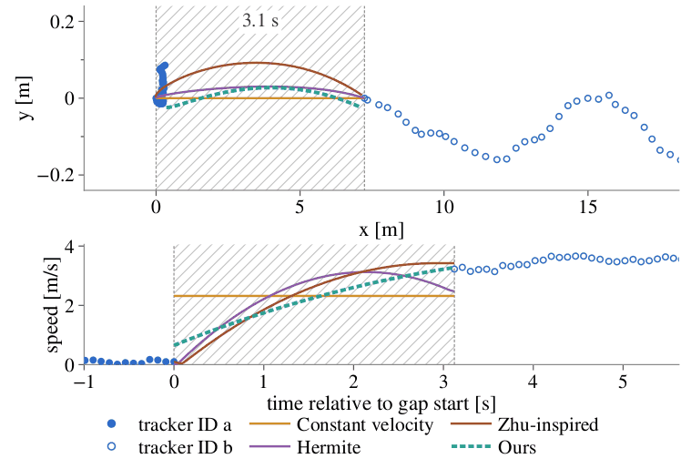
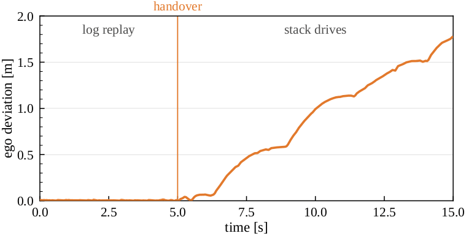

01Summary
Automated vehicles record large amounts of data during on-road testing, yet they still meet situations that end in a disengagement, an unplanned manual intervention. Reproducing such an event in simulation needs a complete scene built from fragmented on-board perception, and traffic that reacts when a revised driving stack deviates from the recording. Rosbag2Scenario is a pipeline that reconstructs the recorded traffic from on-board perception data into OpenSCENARIO scenarios and re-simulates them in CARLA. All actors, including the ego vehicle, replay the recording until a handover shortly before the disengagement. After it, the driving stack controls the ego and only vehicles in a rear cone become reactive. On nine real disengagements, the re-simulation matches the recording within centimeters up to the handover and reproduces five of them. The per-step errors attribute each failed reproduction to one step of the pipeline.
- 5 of 9recorded disengagements reproduced in closed loop
- 63 / 111tracker gaps rejoined, with no wrong link
- 4–7 mmmedian execution error of vehicles and ego up to the handover
- 0.8 mmean traffic deviation at the disengagement under the hybrid policy, against 5.6 m with all traffic reactive
02Pipeline overview
The pipeline turns a recorded drive into a scenario for any OpenSCENARIO-compatible simulator. A perception source provides the object tracks, either as recorded by the on-board tracker or regenerated offline from the recorded camera and LiDAR data. Track reconstruction filters, associates and completes these tracks into one continuous trajectory per actor. The export writes the actors and the recorded ego trajectory into an OpenSCENARIO file, together with a traffic plan that gives each vehicle a prescribed or reactive control policy. The perception source, the reconstruction method, the traffic policy and the driving stack can each be replaced on their own.

03From recording to re-simulation
Four steps take one recorded disengagement to a closed-loop test of the driving stack.
-
Take the tracks the stack perceived
The input is a ROS bag with the ego pose, the object tracks and, optionally, the driving mode, which yields the disengagement time td. By default the pipeline uses the online tracker output: it exists for every drive without extra computation and is what the stack perceived. Against human labels on a real recording, these tracks reach the highest car AP and HOTA, with a position RMSE of 0.28 m. Offline labels recover more of the labeled cars but need 394 s of GPU time for 20 s of data.
These tracks are fragmented. Occlusions and limited sensor range leave tracks that start late, end early or break apart, so actors replayed naively appear and disappear mid-scene.
-
Reconstruct one continuous trajectory per actor
Filter rejects invalid samples and short tracklets. Association links two fragments only if they pass gates on class, size, speed and heading and their endpoints agree with bounded-acceleration motion predicted across the gap in both directions. A lane fallback handles curves and braking, and a link whose best alternative is nearly as good is left unlinked. Completion estimates the boundary states with a forward-backward constant-acceleration smoother, fills the gap with a cubic Hermite curve, accepts it only if the motion is dynamically plausible, and extends track ends along the lane so that actors drive into and out of the detection range.

An actor lost as ID 7 during an occlusion returns as ID 12. (a) Both predictions meet inside the association gate, while ID 9 fails the heading check. (b) Completion bridges the occlusion and extends both ends. 
A real gap from D7: a car pulling away behind the ego is lost for 3.1 s and returns under a new ID. -
Export with a late handover and hybrid traffic
The ego replays its recorded trajectory until the handover th = td − Δtpre. The driving stack already runs during the replay, so it receives meaningful pose and velocity feedback, and the lead time lets it act before the recorded disengagement. At the handover, only the vehicles in a rear cone behind the ego (half-angle 90°, range 100 m) switch from prescribed to reactive motion, controlled by SUMO in co-simulation. Traffic ahead and oncoming keeps its recorded motion.
Both choices are measured. Traffic that is reactive from the start drifts away from the recording before the ego behaves differently, and even on an empty road the stack-driven ego drifts from its recorded trajectory.

Mean deviation of moving vehicles within 50 m of the ego from their reconstructed trajectories, over nine drives with a log-replayed ego, aligned at the handover. 
Deviation of the ego from its recorded trajectory on an empty road: 1.2 cm during log replay, 1.0 m after 5 s and 1.8 m after 10 s under stack control. -
Re-simulate, score and reuse as a regression test
The stack under test drives the ego in CARLA from the handover on, with simulated camera and LiDAR data. An event counts as reproduced if the stack shows the behavior of the real stack before the disengagement, for example a sustained stop within 2 m of the recorded stop position; each criterion is derived from the recording. For every event the error of each step is measured: the total deviation of the re-simulation from the recording splits exactly into a reconstruction error and an execution error, etotal = erec + eexec. A reproduced event can then be rerun on later versions of the stack.
04Results
The setup runs CARLA 0.9.16 with its ScenarioRunner and SUMO 1.27.1 for the reactive vehicles. The stack under test is an adapted Autoware Universe stack on ROS 2 Humble with BEVFusion perception, on one desktop computer with an RTX 5080 GPU. The evaluation uses nine disengagements recorded with a research vehicle in urban traffic, D1–D9, and three drives in CARLA's Town10 map, where the simulator provides ground truth for vehicles the tracker lost.
Reconstruction of fragmented tracks
Three 180 s drives in Town10 with forty vehicles each contain 111 tracker gaps of 49 vehicles. Rosbag2Scenario rejoins 63 of them and creates no wrong link. The proximity rule of Zhu et al. succeeds where the vehicle barely moves but rejoins only 17 and 15 of the 56 gaps with a moving vehicle, where ours rejoins 33. Given the correct pairing, our completion fills all 111 gaps with an RMSE of 0.88 m (median 0.54 m per gap, 98 % below 2 m).
| Method | Rejoined, all | Rejoined, moving | Wrong | RMSE all [m] | RMSE moving [m] |
|---|---|---|---|---|---|
| Constant velocity | – | – | – | 1.00 | 1.16 |
| Hermite | – | – | – | 1.21 | 1.23 |
| Zhu et al., 2 s gate | 58 | 17 | 2 | 1.17 | 1.25 |
| Zhu et al., 5 s gate | 62 | 15 | 8 | 1.17 | 1.25 |
| Ours | 63 | 33 | 0 | 0.88 | 0.96 |
Reconstruction of 111 tracker gaps in three CARLA drives (paper, Table II). Rejoined counts gaps whose two fragments end up as one actor; Wrong counts links between different vehicles.
In the nine recorded disengagements, association accepts 348 links between 819 vehicle track fragments, withdraws 26 after completion and leaves 34 ambiguous pairs unlinked. Half of the 496 resulting vehicle tracks are joined from several fragments or extended at a track end.
Reactive traffic and handover
With the ego on its recorded trajectory, log replay keeps vehicles within centimeters of the reconstruction on every drive. Vehicles reactive from the start are 3.3 m off at the handover and 5.6 m at the disengagement; releasing all vehicles at the handover still reaches 2.6 m. The hybrid policy equals log replay up to the handover and reaches a mean of 0.8 m at the disengagement (0.001–1.9 m per drive). In the median over drives, 80 % of its samples stay within 2 m, against 63 % and 60 % for the two all-reactive policies.
Disengagement reproduction
With the handover 5 s before the disengagement, reconstruction moves the recorded samples by a median of 0.06 m up to the handover, execution adds 4 mm for the vehicles and 7 mm for the ego, and 98.5 % of the expected vehicle samples are present. The simulated stack tracks 87.6 % of the vehicles that the real stack tracked. At the disengagement, the simulated ego differs from the recorded one by a median of 1.0 m along its path, 0.06 m laterally and 0.8 m/s in speed. Creating a scenario takes 0.5–3.5 min per recording on a desktop CPU, for scenes with 74–248 actors.
| ID | Situation | Cone | Cov. | ≤ 2 m | ed | Outcome |
|---|---|---|---|---|---|---|
| D1 | truck blocks lane | 6 | 100.0 | 90.8 | 0.41 | reproduced |
| D2 | truck partly blocks lane | 4 | 98.5 | 68.8 | 0.63 | reproduced |
| D3 | protruding parking car | 10 | 100.0 | 73.4 | 4.11 | reproduced |
| D4 | reversing car, parked coach | 18 | 91.2 | 64.7 | 9.86 | not established |
| D5 | close pass of parked car | 1 | 100.0 | 97.6 | 11.20 | diverged |
| D6 | pedestrians at right turn | 1 | 95.9 | 77.9 | 0.02 | reproduced |
| D7 | lane change beside a car | 10 | 98.7 | 82.6 | 2.04 | diverged |
| D8 | taxi about to reverse | 0 | 97.5 | 97.5 | 1.03 | diverged |
| D9 | cyclist, pedestrians at crosswalk | 2 | 83.9 | 80.1 | 0.22 | reproduced |
Re-simulation of nine recorded disengagements (paper, Table III). Cone is the number of reactive rear-cone vehicles. Cov. and ≤ 2 m are the shares [%] of expected vehicle samples present before th and within 2 m of the reconstruction from th to td + 5 s. ed is the ego position error at td [m].
The stack under test stops behind the blocking truck (D1), waits behind the partly blocking truck (D2), approaches the protruding car without a sustained stop (D3), holds for the pedestrians at the right turn (D6), and stops before a crosswalk for a crossing cyclist and two pedestrians (D9). The measured errors and the logs of both stacks attribute each failure to one step. In D5 (perception), the simulated stack perceives angled parked cars farther from its path than the real stack did, because no vehicle model matches the detected box, and passes 2.7 s earlier. In D7 (localization), the real stack likely had a 0.5–0.6 m localization offset that the simulated ego does not have. In D8 (planning), the simulated stack stops for a pedestrian and holds that stop, so the situation that prompted the takeover does not arise.
05Re-simulated disengagements
The clips show the simulated cameras of the ego: the three front cameras for D1 and D7, and all six (front row: left, center, right; back row: rear left, center, right) for the D2 pair, where the vehicles behind the ego matter. The banner switches when the driving stack takes over from the replayed recording. Real camera footage is not shown.
The D2 pair shows why reactive rear traffic matters: once the stack resolves the situation, the scenario is only usable with reactive vehicles behind the ego. On the stack version that was driven on the road, the re-simulation of D2 ends as the real drive did, with the ego waiting behind the truck.
06Limitations
- What can be re-simulated. The five reproduced events are planning-related: an object in the recorded scene determines the behavior of the stack. Events caused by perception or localization errors are outside the scope of a re-simulation from object tracks, because the simulated stack perceives the reconstructed objects anew and localizes without the real error.
- Small margins after the handover. The diverged events were decided by clearances of 0.1–0.4 m and by timing within a second, which the pipeline does not preserve after the handover.
- Tracker artifacts and vehicle models. The box of a partly visible standing vehicle can shift so far that it is replayed as moving (D4). Spawned vehicle models differ from the recorded vehicles; in D4 the model is wider for 95 % of the vehicles. Several limits originate in the tracker, so a better tracker improves the pipeline directly.
- Dynamics at the switch. Released vehicles lose speed when they switch from prescribed to physical motion, and the simulated ego brakes harder than commanded (D3).
- Scene and validity. Actors that were never perceived and traffic signals, which are not reconstructed and reported as green, limit the scene. Reconstruction is scored on simulated drives on one map, where traffic mostly cruises at one speed or stands. The nine disengagements are case studies.
07BibTeX
@misc{rosbag2scenario,
title = {Rosbag2Scenario: From Real-World Disengagements
to Replayable Scenarios},
author = {Anonymous Authors},
year = {2026},
note = {Under double-blind review}
}